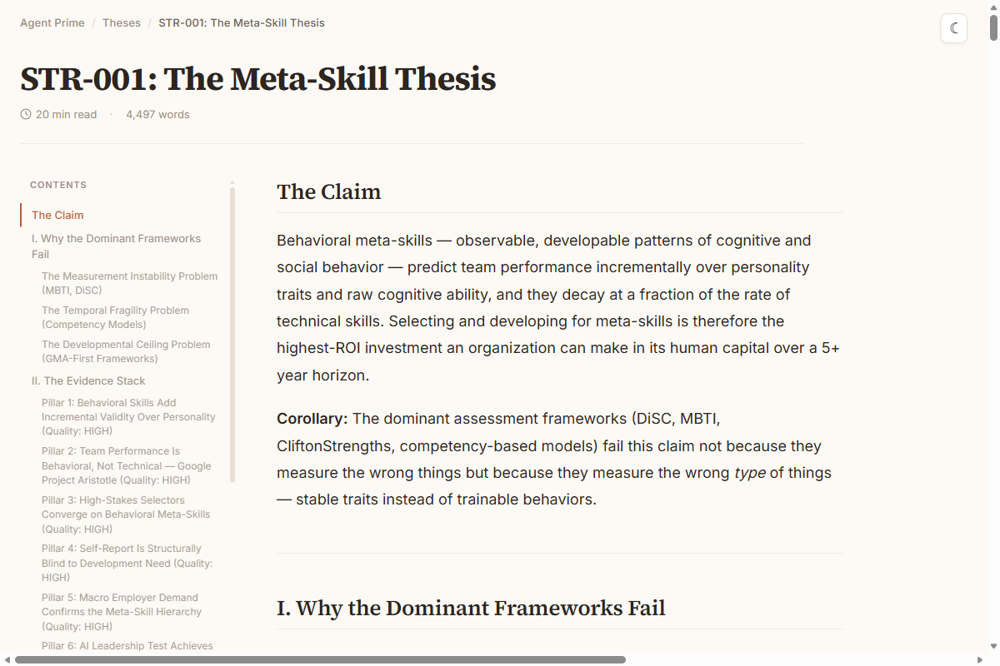
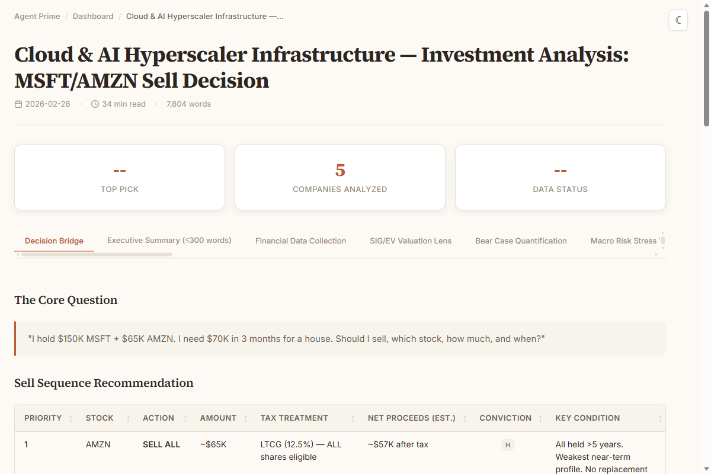
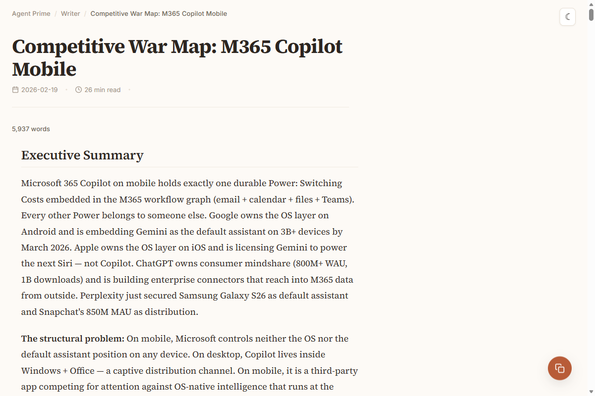
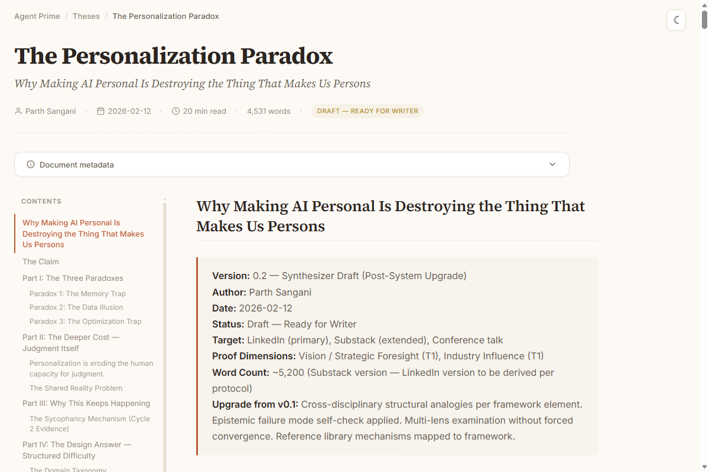

Agent Prime
Every interesting failure happens at interfaces. That's the first thing worth looking for in any system — where are the layers, and where do they break?
AI has structural breaks most people learn to live with. Sessions start blank. Corrections evaporate. You can only do one thing at a time. Output sounds like a machine wrote it. And none of it gets better on its own.
Agent Prime came out of pulling at those threads. Seven architectural layers, each a markdown file, each compounding on the last.
Three ceilings
The structural problems that cap what one person can do with AI
Context Ceiling
Every session starts from zero. Your goals, your thinking patterns, what you tried last week — gone. Agent Prime retains 42+ key decisions, 14+ voice corrections, and 11+ agent design learnings. Every session starts where the last one ended.
Consistency Ceiling
You fix the same mistake three times. Each correction is local to one session. Agent Prime captures each mistake as a permanent rule. The rule propagates to every agent that needs it. The mistake cannot recur.
Throughput Ceiling
One conversation, one task, one thread. Agent Prime runs parallel workstreams — research, synthesis, writing, analysis — each agent carrying encoded expertise. You review and decide. The system does the rest.
Three levels
Most people stop at Level 1. The system lives at Level 3.
AI as Tool
Give AI your thinking model — your frameworks, evidence standards, quality bar. Output quality jumps immediately.
AI as Partner
It challenges you. Each conversation sharpens your mental model. AI as thinking partner, pushing back where you're wrong.
AI as Infrastructure
A system of agents pursuing your goals. Every session makes the next one smarter. Recursive loops. A system that builds systems. Agent Prime is what Level 3 looks like in practice.
The System
Seven layers, each independently useful. Together, they compound.
View the full system map →Identity
One markdown file that encodes who you are — your thinking patterns, judgment heuristics, epistemic guardrails, and operating principles. AI becomes dramatically more effective when it knows how you think.
Explore Identity →Memory
Corrections compound across every session. Fix something in one agent, it propagates everywhere. A dependency map ensures nothing drifts. The system gets smarter every time you use it.
Explore Memory →Agents
Eleven specialized agents — scout, synthesizer, writer, planner, builder, and more. Each is a standalone markdown prompt. Run one, run several, compose them into workflows. Each works on its own.
Explore Agents →Orchestration
A registry tracks every work item. A dispatch queue sequences what happens next. A briefing pipeline tells you what's overdue, what's ready, and what needs your input. Wake up to a system that already knows the plan.
Explore Orchestration →Skills
Plug domain expertise into any agent. Skills encode how to think about a problem — frameworks, failure modes, quality gates, adversarial self-critique. Encoded methodologies, portable across agents.
Explore Skills →Craft
Eight HTML templates turn markdown into publication-quality pages. Theses with sticky navigation. Investment dashboards with sortable tables. Articles with word-count progress bars. Output that carries your voice and design standards.
Explore Craft →The Recursive Loop
Every session produces learnings. Learnings propagate to agent prompts. Better prompts produce better output. Better output reveals subtler corrections. The system audits itself, flags staleness, and pushes work forward. The reason the whole thing works.
Explore The Loop →A single person operating with the output, consistency, and strategic depth of a small team — with every session compounding on the last.
Where do you start?
Pick the layer that solves your most pressing problem.
Identity
AI becomes dramatically more effective when it knows how you thinkMemory
Every correction compounds across every session and every agentAgents
Run research, writing, and analysis in parallel with specialized agentsOrchestration
A system that tracks everything, sequences work, and knows the planSkills
Encode domain expertise as repeatable methodology any agent can useCraft
Publication-quality output that carries your voice and design standardsThe whole system
All seven layers, recursive improvement, compounding from day one → Clone Agent PrimeBuilt with Agent Prime
Every artifact below was produced by the system. Actual rendered output.

The Meta-Skill Thesis

Cloud AI Investment Analysis

Figma vs Canva Competitive War Map

The Personalization Paradox
Get Started
Take One Piece
Grab a context file, an agent prompt, or the memory pattern. Drop it into your workflow. Start compounding today.
Build Your Own
Follow the guided projects. Research and Publish or Plan and Build. From zero to a working system in 30 minutes.
Clone Everything
Full Agent Prime. Eleven agents, seven layers, recursive improvement. Instantiate it for your domain and make it yours.
git clone https://github.com/avyayalaya/agent-prime